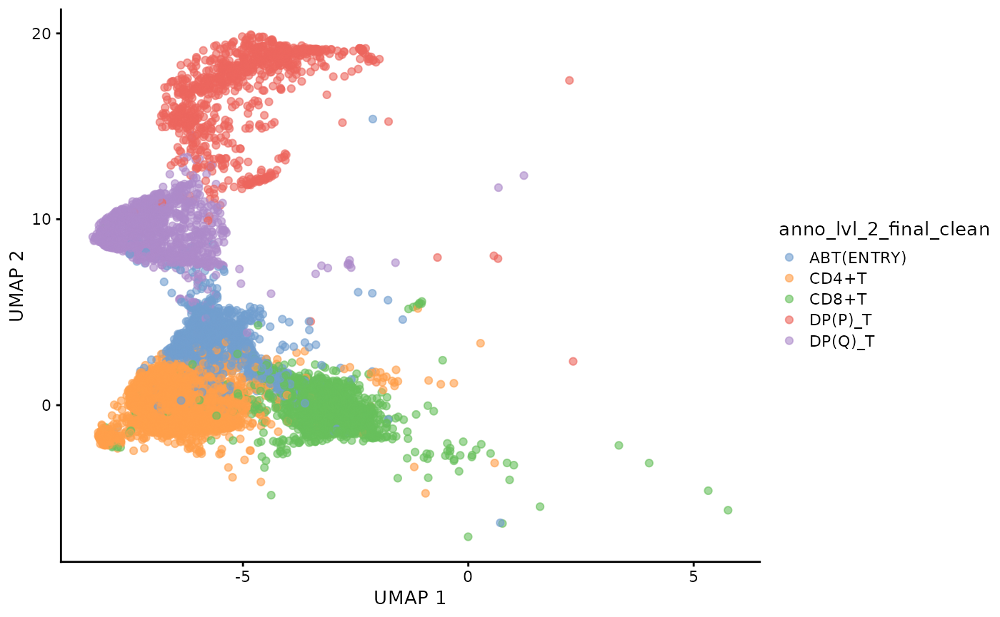
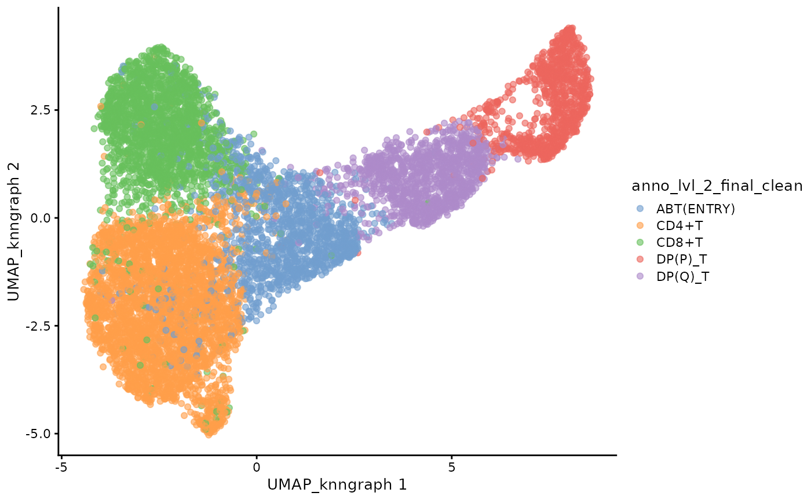
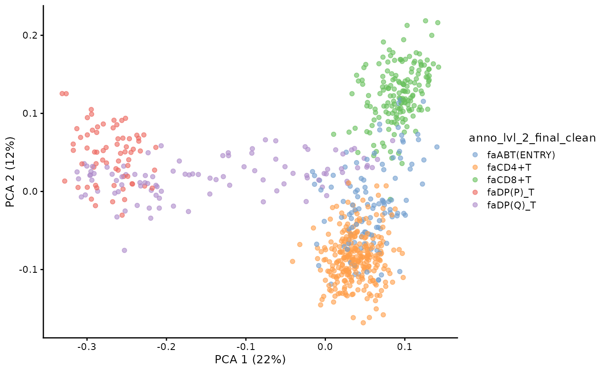
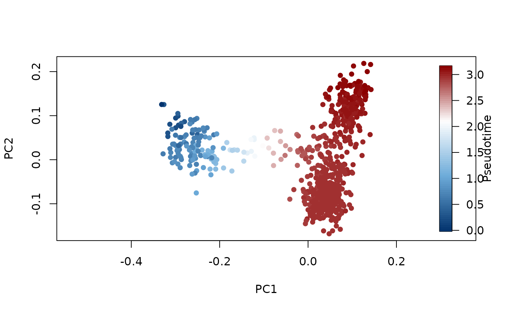
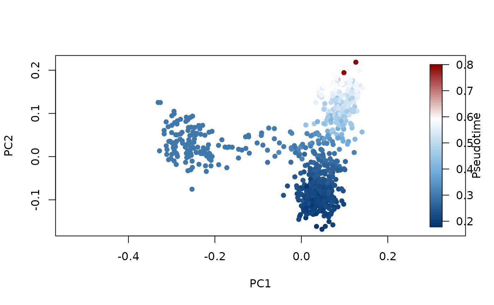
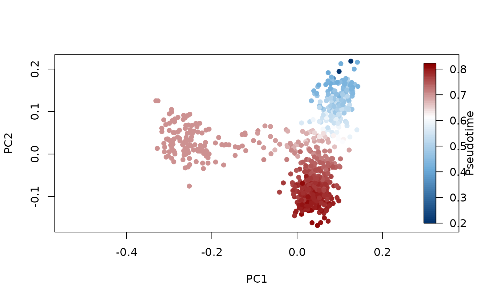
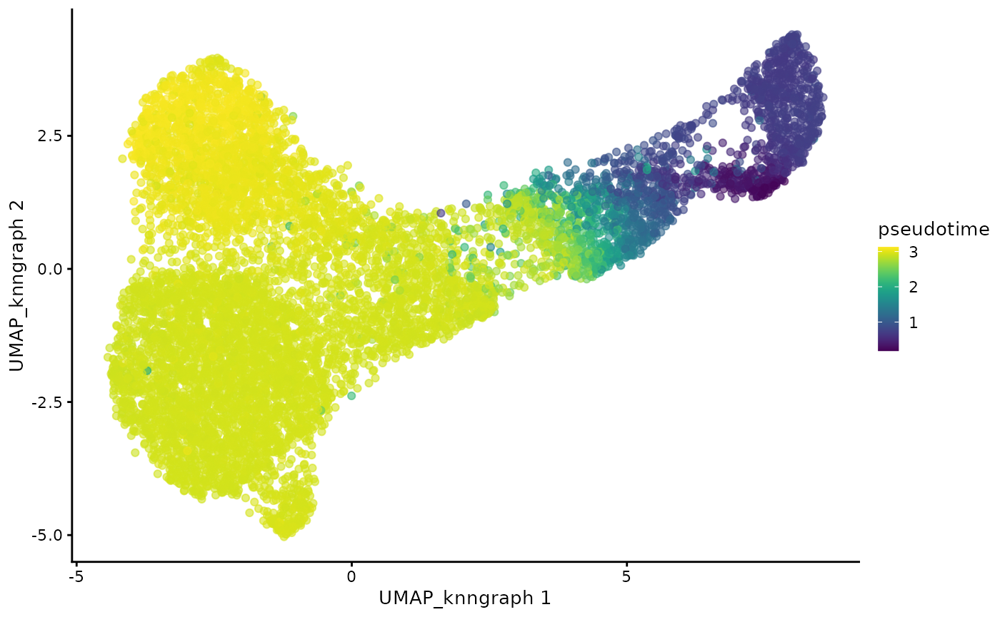
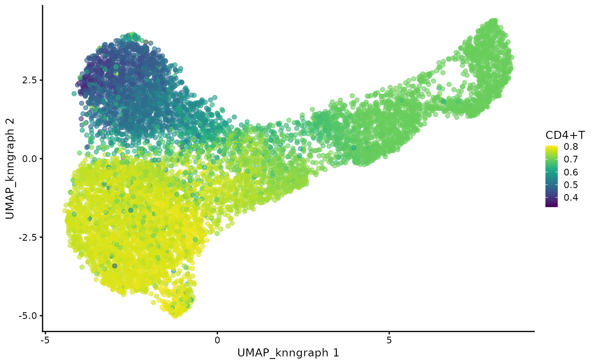
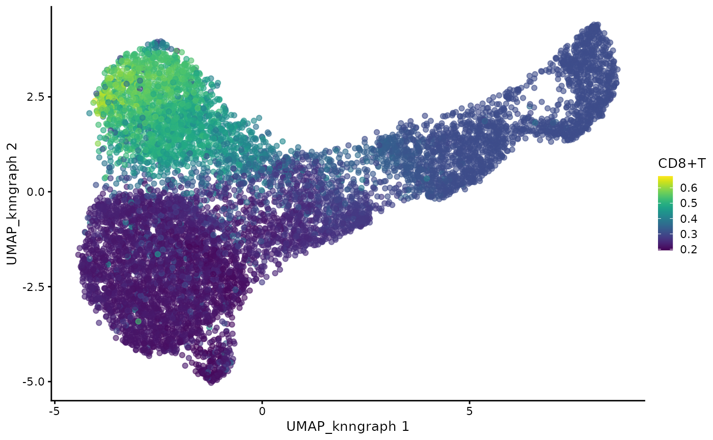

vignettes.rmdWelcome to dandelionR!
dandelionR is an R package for performing single-cell
immune repertoire trajectory analysis, based on the original python
implementation in dandelion.
It provides all the necessary tools to interface with scRepertoire and a custom implementation of absorbing markov chain for pseudotime inference, inspired based on the palantir python package.
You can install dandelionR from GitHub with:
if (!requireNamespace("devtools", quietly = TRUE))
install.packages("devtools")
if (!requireNamespace("BiocManager", quietly = TRUE))
install.packages("BiocManager")
if (!requireNamespace("scater", quietly = TRUE)) # only for the tutorial
BiocManager::install("scater")
if (!requireNamespace("fields", quietly = TRUE)) # only for the tutorial
install.packages("fields")
devtools::install_github('tuonglab/dandelionR', dependencies = TRUE)
library(dandelionR)
library(scater)
#> Loading required package: SingleCellExperiment
#> Loading required package: SummarizedExperiment
#> Loading required package: MatrixGenerics
#> Loading required package: matrixStats
#>
#> Attaching package: 'MatrixGenerics'
#> The following objects are masked from 'package:matrixStats':
#>
#> colAlls, colAnyNAs, colAnys, colAvgsPerRowSet, colCollapse,
#> colCounts, colCummaxs, colCummins, colCumprods, colCumsums,
#> colDiffs, colIQRDiffs, colIQRs, colLogSumExps, colMadDiffs,
#> colMads, colMaxs, colMeans2, colMedians, colMins, colOrderStats,
#> colProds, colQuantiles, colRanges, colRanks, colSdDiffs, colSds,
#> colSums2, colTabulates, colVarDiffs, colVars, colWeightedMads,
#> colWeightedMeans, colWeightedMedians, colWeightedSds,
#> colWeightedVars, rowAlls, rowAnyNAs, rowAnys, rowAvgsPerColSet,
#> rowCollapse, rowCounts, rowCummaxs, rowCummins, rowCumprods,
#> rowCumsums, rowDiffs, rowIQRDiffs, rowIQRs, rowLogSumExps,
#> rowMadDiffs, rowMads, rowMaxs, rowMeans2, rowMedians, rowMins,
#> rowOrderStats, rowProds, rowQuantiles, rowRanges, rowRanks,
#> rowSdDiffs, rowSds, rowSums2, rowTabulates, rowVarDiffs, rowVars,
#> rowWeightedMads, rowWeightedMeans, rowWeightedMedians,
#> rowWeightedSds, rowWeightedVars
#> Loading required package: GenomicRanges
#> Loading required package: stats4
#> Loading required package: BiocGenerics
#>
#> Attaching package: 'BiocGenerics'
#> The following objects are masked from 'package:stats':
#>
#> IQR, mad, sd, var, xtabs
#> The following objects are masked from 'package:base':
#>
#> anyDuplicated, aperm, append, as.data.frame, basename, cbind,
#> colnames, dirname, do.call, duplicated, eval, evalq, Filter, Find,
#> get, grep, grepl, intersect, is.unsorted, lapply, Map, mapply,
#> match, mget, order, paste, pmax, pmax.int, pmin, pmin.int,
#> Position, rank, rbind, Reduce, rownames, sapply, saveRDS, setdiff,
#> table, tapply, union, unique, unsplit, which.max, which.min
#> Loading required package: S4Vectors
#>
#> Attaching package: 'S4Vectors'
#> The following object is masked from 'package:utils':
#>
#> findMatches
#> The following objects are masked from 'package:base':
#>
#> expand.grid, I, unname
#> Loading required package: IRanges
#> Loading required package: GenomeInfoDb
#> Loading required package: Biobase
#> Welcome to Bioconductor
#>
#> Vignettes contain introductory material; view with
#> 'browseVignettes()'. To cite Bioconductor, see
#> 'citation("Biobase")', and for packages 'citation("pkgname")'.
#>
#> Attaching package: 'Biobase'
#> The following object is masked from 'package:MatrixGenerics':
#>
#> rowMedians
#> The following objects are masked from 'package:matrixStats':
#>
#> anyMissing, rowMedians
#> Loading required package: scuttle
#> Loading required package: ggplot2
library(fields)
#> Loading required package: spam
#> Spam version 2.11-0 (2024-10-03) is loaded.
#> Type 'help( Spam)' or 'demo( spam)' for a short introduction
#> and overview of this package.
#> Help for individual functions is also obtained by adding the
#> suffix '.spam' to the function name, e.g. 'help( chol.spam)'.
#>
#> Attaching package: 'spam'
#> The following object is masked from 'package:stats4':
#>
#> mle
#> The following objects are masked from 'package:base':
#>
#> backsolve, forwardsolve
#> Loading required package: viridisLite
#>
#> Try help(fields) to get started.This is a work in progress, so please feel free to open an issue if you encounter any problems or have any suggestions for improvement.
subset the object to cells with paired chains, and prepare appropriately named and formatted columns for the pseudobulking functions to use as defaults
sce_vdj <- setup_vdj_pseudobulk(sce_vdj, already.productive = FALSE)
#> Checking productivity from productive_abT_VDJ, productive_abT_VJ ...23270 of cells filtered
#> checking allowed chain status...4 of cells filtered
#> Extract main TCR from v_call_abT_VDJ, d_call_abT_VDJ, j_call_abT_VDJ, v_call_abT_VJ, j_call_abT_VJ ...Complete.
#> Filtering cells from v_call_abT_VDJ_main, j_call_abT_VDJ_main, v_call_abT_VJ_main, j_call_abT_VJ_main ...202 of cells filtered
#> 8524 of cells remain.plot the filtered data
plotUMAP(sce_vdj,color_by = "anno_lvl_2_final_clean")
use miloR to create pseudobulks. Construct neighbor graph with many neighbors. Sample the representative neighbours form the objects.
library(miloR)
#> Loading required package: edgeR
#> Loading required package: limma
#>
#> Attaching package: 'limma'
#> The following object is masked from 'package:scater':
#>
#> plotMDS
#> The following object is masked from 'package:BiocGenerics':
#>
#> plotMA
#>
#> Attaching package: 'edgeR'
#> The following object is masked from 'package:SingleCellExperiment':
#>
#> cpm
traj_milo <- Milo(sce_vdj)
milo_object <- buildGraph(traj_milo, k = 50, d=20, reduced.dim="X_scvi")
#> Constructing kNN graph with k:50
milo_object <- makeNhoods(milo_object, reduced_dims="X_scvi", d=20)
#> Checking valid object
#> Running refined sampling with reduced_dim
milo_object <- milo_umap(milo_object)
#> Loading required namespace: Seurat
#> 01:47:17 UMAP embedding parameters a = 0.9922 b = 1.112
#> 01:47:17 Read 8524 rows of sparse distance matrix
#> 01:47:17 Finding nearest neighbors from sparse matrix
#> 01:47:24 Commencing smooth kNN distance calibration using 1 thread with target n_neighbors = 50
#> 01:47:24 8524 smooth knn distance failures
#> 01:47:26 Initializing from normalized Laplacian + noise (using RSpectra)
#> 01:47:26 Commencing optimization for 500 epochs, with 544394 positive edges
#> 01:48:21 Optimization finished
plotUMAP(milo_object,color_by = "anno_lvl_2_final_clean",dimred = "UMAP_knngraph")
construct vdj feature space
pb.milo <- vdj_pseudobulk(milo_object,col_to_take = "anno_lvl_2_final_clean")
# pbs = milo_object@nhoods
pb.milo<-runPCA(pb.milo, assay.type = "X")
plotPCA(pb.milo,color_by = "anno_lvl_2_final_clean")
library(destiny)
#>
#> Attaching package: 'destiny'
#> The following object is masked from 'package:SummarizedExperiment':
#>
#> distance
#> The following object is masked from 'package:GenomicRanges':
#>
#> distance
#> The following object is masked from 'package:IRanges':
#>
#> distance
dm <- DiffusionMap(t(pca),n_pcs=50, n_eigs = 10) # have transition matrix in slot transitions
#> 'as(<dsCMatrix>, "dgTMatrix")' is deprecated.
#> Use 'as(as(., "generalMatrix"), "TsparseMatrix")' instead.
#> See help("Deprecated") and help("Matrix-deprecated").
DPTroot <- paste0("DPT",root)
colors <- colorRampPalette(c("#03346E","#6EACDA", "white", "darkred"))(80)
plot(reducedDims(pb.milo)$PCA, col = colors[cut(dif.pse[[DPTroot]],breaks=80)], pch=16, asp = 1)
image.plot(legend.only = TRUE,
zlim = range(dif.pse[[DPTroot]], na.rm = TRUE), # 设置伪时间的范围
col = colors, # 与点颜色相同的渐变颜色条
legend.lab = "Pseudotime")
diffusiontime <- dif.pse[[DPTroot]]
pb.milo <- markov_probability(pb.milo, dm, diffusiontime = diffusiontime, branch.tips, root)
#> Sampling and flocking waypoints...
#> Markov chain construction...
#> Loading required namespace: bluster
#> Computing fundamental matrix and absorption probabilities...
#> Project probabilites from waypoints to each pseudobulk...
colors <- colorRampPalette(c("#03346E","#6EACDA", "white", "darkred"))(80)
plot(reducedDims(pb.milo)$PCA, col = colors[cut(colData(pb.milo)[[names(branch.tips)[1]]],breaks=80)], pch=16, asp = 1)
image.plot(legend.only = TRUE,
zlim = range(colData(pb.milo)[[names(branch.tips)[1]]], na.rm = TRUE),
col = colors,
legend.lab = "Pseudotime") 
plot(reducedDims(pb.milo)$PCA, col = colors[cut(colData(pb.milo)[[names(branch.tips)[2]]],breaks=80)], pch=16, asp = 1)
image.plot(legend.only = TRUE,
zlim = range(colData(pb.milo)[[names(branch.tips)[2]]], na.rm = TRUE),
col = colors,
legend.lab = "Pseudotime") 
cdata<- project_pseudotime_to_cell(milo_object, pb.milo, branch.tips)
#> 14 number of cells removed due to not belonging to any neighbourhood
plotUMAP(cdata,color_by = "anno_lvl_2_final_clean",dimred = "UMAP_knngraph")
plotUMAP(cdata,color_by = "pseudotime",dimred = "UMAP_knngraph")
plotUMAP(cdata,color_by = "CD4+T",dimred = "UMAP_knngraph")
plotUMAP(cdata,color_by = "CD8+T",dimred = "UMAP_knngraph")
sessionInfo()
#> R version 4.4.2 (2024-10-31)
#> Platform: x86_64-pc-linux-gnu
#> Running under: Ubuntu 22.04.5 LTS
#>
#> Matrix products: default
#> BLAS: /usr/lib/x86_64-linux-gnu/openblas-pthread/libblas.so.3
#> LAPACK: /usr/lib/x86_64-linux-gnu/openblas-pthread/libopenblasp-r0.3.20.so; LAPACK version 3.10.0
#>
#> locale:
#> [1] LC_CTYPE=C.UTF-8 LC_NUMERIC=C LC_TIME=C.UTF-8
#> [4] LC_COLLATE=C.UTF-8 LC_MONETARY=C.UTF-8 LC_MESSAGES=C.UTF-8
#> [7] LC_PAPER=C.UTF-8 LC_NAME=C LC_ADDRESS=C
#> [10] LC_TELEPHONE=C LC_MEASUREMENT=C.UTF-8 LC_IDENTIFICATION=C
#>
#> time zone: UTC
#> tzcode source: system (glibc)
#>
#> attached base packages:
#> [1] stats4 stats graphics grDevices utils datasets methods
#> [8] base
#>
#> other attached packages:
#> [1] destiny_3.20.0 miloR_2.2.0
#> [3] edgeR_4.4.0 limma_3.62.1
#> [5] fields_16.3 viridisLite_0.4.2
#> [7] spam_2.11-0 scater_1.34.0
#> [9] ggplot2_3.5.1 scuttle_1.16.0
#> [11] SingleCellExperiment_1.28.1 SummarizedExperiment_1.36.0
#> [13] Biobase_2.66.0 GenomicRanges_1.58.0
#> [15] GenomeInfoDb_1.42.0 IRanges_2.40.0
#> [17] S4Vectors_0.44.0 BiocGenerics_0.52.0
#> [19] MatrixGenerics_1.18.0 matrixStats_1.4.1
#> [21] dandelionR_0.99.0
#>
#> loaded via a namespace (and not attached):
#> [1] fs_1.6.5 spatstat.sparse_3.1-0 httr_1.4.7
#> [4] RColorBrewer_1.1-3 numDeriv_2016.8-1.1 tools_4.4.2
#> [7] sctransform_0.4.1 utf8_1.2.4 R6_2.5.1
#> [10] lazyeval_0.2.2 uwot_0.2.2 withr_3.0.2
#> [13] sp_2.1-4 gridExtra_2.3 progressr_0.15.1
#> [16] cli_3.6.3 textshaping_0.4.0 spatstat.explore_3.3-3
#> [19] fastDummies_1.7.4 labeling_0.4.3 sass_0.4.9
#> [22] Seurat_5.1.0 robustbase_0.99-4-1 spatstat.data_3.1-4
#> [25] proxy_0.4-27 ggridges_0.5.6 pbapply_1.7-2
#> [28] pkgdown_2.1.1 systemfonts_1.1.0 parallelly_1.39.0
#> [31] maps_3.4.2.1 TTR_0.24.4 generics_0.1.3
#> [34] gtools_3.9.5 ica_1.0-3 spatstat.random_3.3-2
#> [37] car_3.1-3 dplyr_1.1.4 Matrix_1.7-1
#> [40] ggbeeswarm_0.7.2 fansi_1.0.6 abind_1.4-8
#> [43] lifecycle_1.0.4 scatterplot3d_0.3-44 yaml_2.3.10
#> [46] carData_3.0-5 SparseArray_1.6.0 Rtsne_0.17
#> [49] grid_4.4.2 promises_1.3.2 crayon_1.5.3
#> [52] miniUI_0.1.1.1 lattice_0.22-6 beachmat_2.22.0
#> [55] cowplot_1.1.3 pillar_1.9.0 knitr_1.49
#> [58] boot_1.3-31 future.apply_1.11.3 codetools_0.2-20
#> [61] leiden_0.4.3.1 glue_1.8.0 spatstat.univar_3.1-1
#> [64] pcaMethods_1.98.0 data.table_1.16.2 vcd_1.4-13
#> [67] vctrs_0.6.5 png_0.1-8 gtable_0.3.6
#> [70] cachem_1.1.0 xfun_0.49 S4Arrays_1.6.0
#> [73] mime_0.12 RcppEigen_0.3.4.0.2 tidygraph_1.3.1
#> [76] pracma_2.4.4 survival_3.7-0 bluster_1.16.0
#> [79] statmod_1.5.0 fitdistrplus_1.2-1 ROCR_1.0-11
#> [82] nlme_3.1-166 xts_0.14.1 RcppAnnoy_0.0.22
#> [85] bslib_0.8.0 irlba_2.3.5.1 vipor_0.4.7
#> [88] KernSmooth_2.23-24 colorspace_2.1-1 nnet_7.3-19
#> [91] smoother_1.3 tidyselect_1.2.1 curl_6.0.1
#> [94] compiler_4.4.2 BiocNeighbors_2.0.0 desc_1.4.3
#> [97] DelayedArray_0.32.0 plotly_4.10.4 scales_1.3.0
#> [100] hexbin_1.28.5 DEoptimR_1.1-3-1 lmtest_0.9-40
#> [103] stringr_1.5.1 digest_0.6.37 goftest_1.2-3
#> [106] spatstat.utils_3.1-1 rmarkdown_2.29 XVector_0.46.0
#> [109] htmltools_0.5.8.1 pkgconfig_2.0.3 fastmap_1.2.0
#> [112] ggthemes_5.1.0 rlang_1.1.4 htmlwidgets_1.6.4
#> [115] UCSC.utils_1.2.0 shiny_1.9.1 farver_2.1.2
#> [118] jquerylib_0.1.4 zoo_1.8-12 jsonlite_1.8.9
#> [121] BiocParallel_1.40.0 BiocSingular_1.22.0 magrittr_2.0.3
#> [124] Formula_1.2-5 GenomeInfoDbData_1.2.13 dotCall64_1.2
#> [127] patchwork_1.3.0 munsell_0.5.1 Rcpp_1.0.13-1
#> [130] viridis_0.6.5 reticulate_1.40.0 stringi_1.8.4
#> [133] ggraph_2.2.1 zlibbioc_1.52.0 MASS_7.3-61
#> [136] plyr_1.8.9 parallel_4.4.2 listenv_0.9.1
#> [139] ggrepel_0.9.6 deldir_2.0-4 graphlayouts_1.2.1
#> [142] splines_4.4.2 tensor_1.5 locfit_1.5-9.10
#> [145] igraph_2.1.1 ranger_0.17.0 spatstat.geom_3.3-4
#> [148] RcppHNSW_0.6.0 reshape2_1.4.4 ScaledMatrix_1.14.0
#> [151] evaluate_1.0.1 SeuratObject_5.0.2 laeken_0.5.3
#> [154] tweenr_2.0.3 httpuv_1.6.15 VIM_6.2.2
#> [157] RANN_2.6.2 tidyr_1.3.1 purrr_1.0.2
#> [160] polyclip_1.10-7 knn.covertree_1.0 future_1.34.0
#> [163] scattermore_1.2 ggforce_0.4.2 rsvd_1.0.5
#> [166] xtable_1.8-4 e1071_1.7-16 RSpectra_0.16-2
#> [169] later_1.4.1 class_7.3-22 ragg_1.3.3
#> [172] tibble_3.2.1 memoise_2.0.1 beeswarm_0.4.0
#> [175] cluster_2.1.6 ggplot.multistats_1.0.1 globals_0.16.3